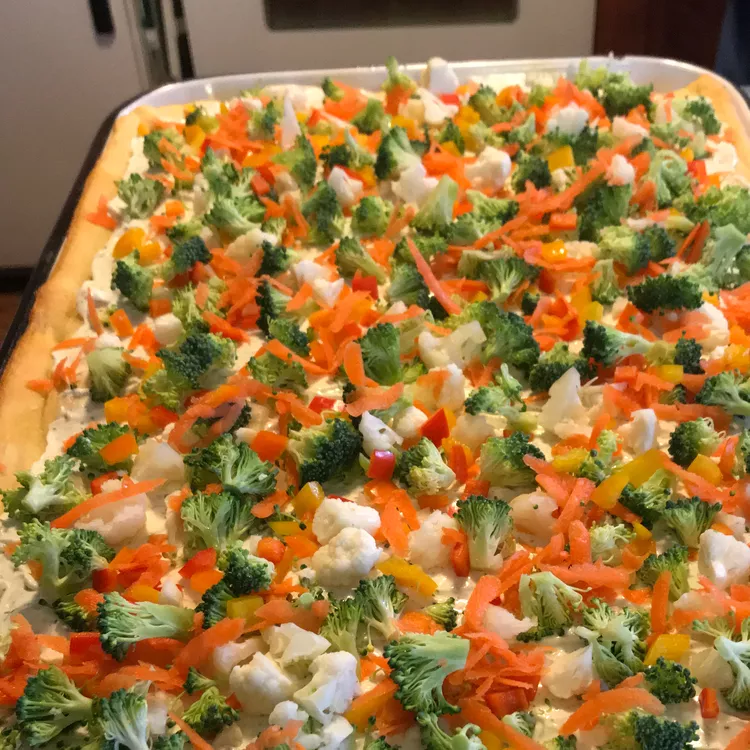

Pizza

Description
When serving this pizza, I never have leftovers.
You can use low-fat or nonfat sour cream for this dish if you'd like.
Ingredients
- 2 (8 ounce) packages refrigerated crescent rolls
- 1 cup sour cream
- 1 (8 ounce) package cream cheese, softened
- 1 (1 ounce) package ranch seasoning mix
- 1 teaspoon dried dill weed
- ¼ teaspoon garlic salt
- 1 ½ cups chopped fresh broccoli
- ½ cup halved and thinly-sliced radishes
- 1 small onion, finely chopped
- 1 red bell pepper, chopped
- 1 carrot, grated
- 1 stalk celery, thinly sliced
Steps
- Preheat the oven to 350 degrees F (175 degrees C).
Spray a jelly roll pan with nonstick cooking spray.
- Press crescent roll dough into the prepared jelly roll pan to form a crust.
Let stand 5 minutes. Pierce with a fork.
- Bake in the preheated oven until dough is fully cooked and golden brown, about 10 minutes.
Let cool completely.
- Combine sour cream, cream cheese, ranch seasoning mix, dill,
and garlic salt in a medium mixing bowl.
Spread the cream cheese mixture on top of cooled crust.
Arrange broccoli, radish, onion, bell pepper, carrot,
and celery on top of the cream cheese mixture.
Cover and let chill, 1 to 2 hours.
Cut chilled pizza into 16 squares to serve.